RUIDO USER GUIDE
A practical, hands-on field manual for playing, shaping, and patching Ruido on your production M-VAVE FM-1 synthesizer.
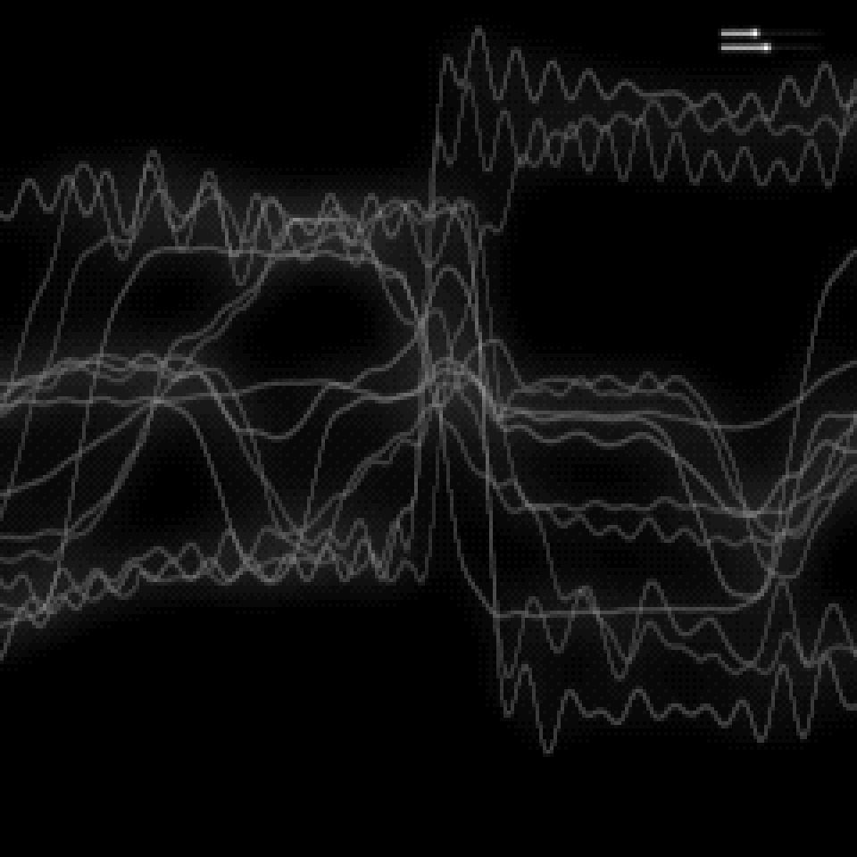
-
1.1 / POWER ON
Flip the rear power switch; the screen flashes the CRT intro and immediately begins generating a live four-voice drone.
-
1.2 / TUNE THE VOICES
Turn (KNOB 1) through (KNOB 4) at the top right to sweep the pitch of Oscillators 1–4, or tap [HOME] to cycle the four knobs through voice
FREQUENCY,DUTY, andDRIFT. -
1.3 / PLAY THE SURFACE
Press the 20 left and center keys to bend the drone with finger pressure, or tap Lower Keys 13–16 at the bottom right to mute and unmute Oscillators 1–4.
-
1 / SWITCH ON SAFELY
Flip the rear power switch on; the unit wakes directly into your last sound.
Note:Start with (MASTER) turned low before connecting headphones or studio monitors.
-
2 / CONNECT AUDIO
Plug headphones or a stereo breakout cable into the 3.5 mm output jack and raise (MASTER) gradually.
-
3 / INSTALL IN BROWSER
Connect via a data-capable USB-C cable, open Ruido on The Firmware Hub in Chrome or Edge, and follow the prompts.
-
4 / RESCUE & REVERT
If an update is interrupted, switch power off, hold [OCT-] while flipping the rear power switch on, and re-flash or return to stock M-VAVE firmware at any time.
3.1 // FRONT PANEL & KEYBED
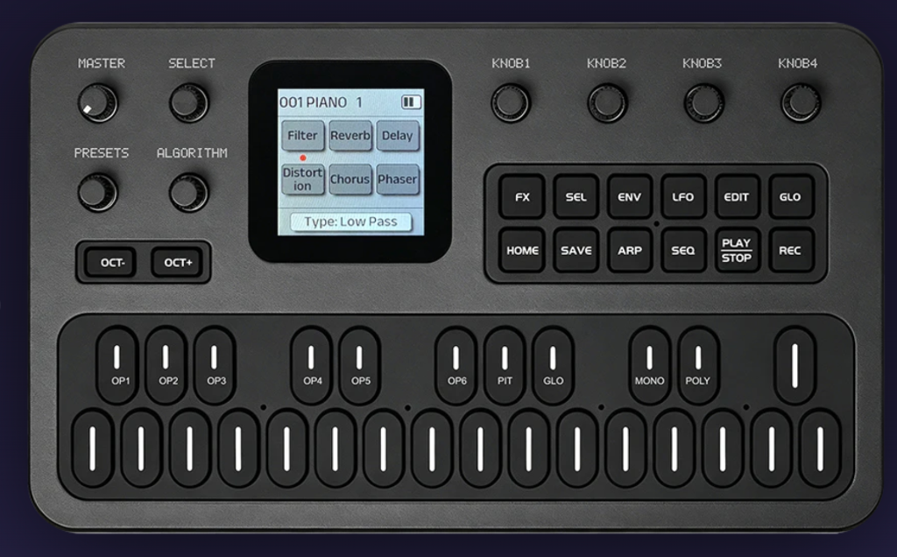
-
LEFT DECK / MASTER & SCENE
(MASTER) sets analog output volume, (SELECT) steps through on-screen lists and voice pages, (PRESETS) morphs continuously across Scenes 1–4, (ALGORITHM) drives power-rail sag (
RAIL COUPLING), and [OCT-] / [OCT+] act as Fine and Coarse encoder gears. -
RIGHT DECK / 4-VOICE KNOBS & PAGE GRID
(KNOB 1) through (KNOB 4) always adjust four visible values on screen: either one parameter across all four oscillators ([HOME], [EDIT]) or four parameters of a single selected voice ([FX], [LFO]).
-
BOTTOM DECK / 27-KEY CAPACITIVE BED
The 16 blank lower keys are divided by four molded dots into four 4-key groups (Lower Keys 1–4, 5–8, 9–12, 13–16), while the 11 upper keys carry labels [OP1] through [POLY] plus one blank Shift (top-right key) at the far right; press [SEL] or hold Shift (top-right key) anytime to display a live on-screen map of every key.
3.2 // REAR EDGE CONNECTIONS
-
HEADPHONES / LINE OUT 3.5 MM STEREO
3.5 mm TRS stereo output for headphones, mixer channels, guitar pedals, or Eurorack gear.
-
MIDI IN 3.5 MM TYPE-A
3.5 mm Type-A TRS MIDI input for external 24 PPQN tempo clock and transport sync.
-
USB-C AUDIO + MIDI
Charges the internal battery, streams class-compliant stereo digital audio and MIDI, and flashes firmware.
-
POWER REAR SWITCH
Hardware power slide switch along the rear edge of the chassis.
4.1 // PANEL BUTTONS & KNOBS
-
[HOME]CYCLE
Cycles (KNOB 1)–(KNOB 4) through all-voice
FREQUENCY,DUTY,DRIFT, and the clean idle scope. -
[EDIT]CYCLE
Cycles (KNOB 1)–(KNOB 4) through all-voice
LEVEL(with MS-20 filter overdrive above70%) and stereoPAN. -
[FX]TAP
Opens the per-voice MS-20 dual filter page (
HPF,HP RES,LPF,LP RES); turn (SELECT) or tap [FX] again to step throughOSC 1–4. -
[LFO]TAP
Opens the dual modulation page (
TARGET,SHAPE,RATE,DEPTH); turn (SELECT) or tap [LFO] again to step through the 8 LFO slots (A1/B1–A4/B4). -
[SEL]TAP
Opens the interactive 27-key diagram; press any key to preview its role or turn (SELECT) to switch between
1/3 LIVE MIXER,2/3 CIRCUIT LAB, and3/3 RHYTHM LAB. -
[GLO]TAP
Opens the 9-row
GLOBAL CONFIGlist menu; turn (SELECT) to scroll and turn (KNOB 1)–(KNOB 4) or (ALGORITHM) to change the highlighted setting. -
[PLAY/STOP]TAP
Fades the master output smoothly to silence and freezes all oscillators and LFOs in place; tap again to resume.
-
[SAVE]TAP × 2
Arms
SAVE SCENEacross [OP1]–[OP4]; tap [OP1]–[OP4] to choose a target slot, then tap [SAVE] again to commit to flash (or tap any other button to cancel). -
(PRESETS)TURN
Morphs every parameter continuously across occupied Scenes 1–4 in a seamless circular loop.
-
(ALGORITHM)TURN
Drives global
RAIL COUPLING(0%–100%), starving the shared virtual power rail so loud peaks pull neighbor oscillators into hard sync.
4.2 // RIGHT-END KEYBED SWITCHES · ALWAYS WITHIN RIGHT-THUMB REACH
-
Lower Keys 13–16TAP
Toggles
Mute 1–4for Oscillators 1–4 from any page, with solid LEDs marking active voices and dark LEDs marking muted voices. -
[MONO]TAP
Toggles
Latch(Hold), freezing any currently pressed expression keys inLIVE MIXER,CIRCUIT LAB, orRHYTHM LABso you can free your left hand. -
[POLY]TAP
Taps the master rhythm clock tempo (
20–300 BPM) when the keyboard is in3/3 RHYTHM LAB.
4.3 // TWO-HAND MODIFIERS
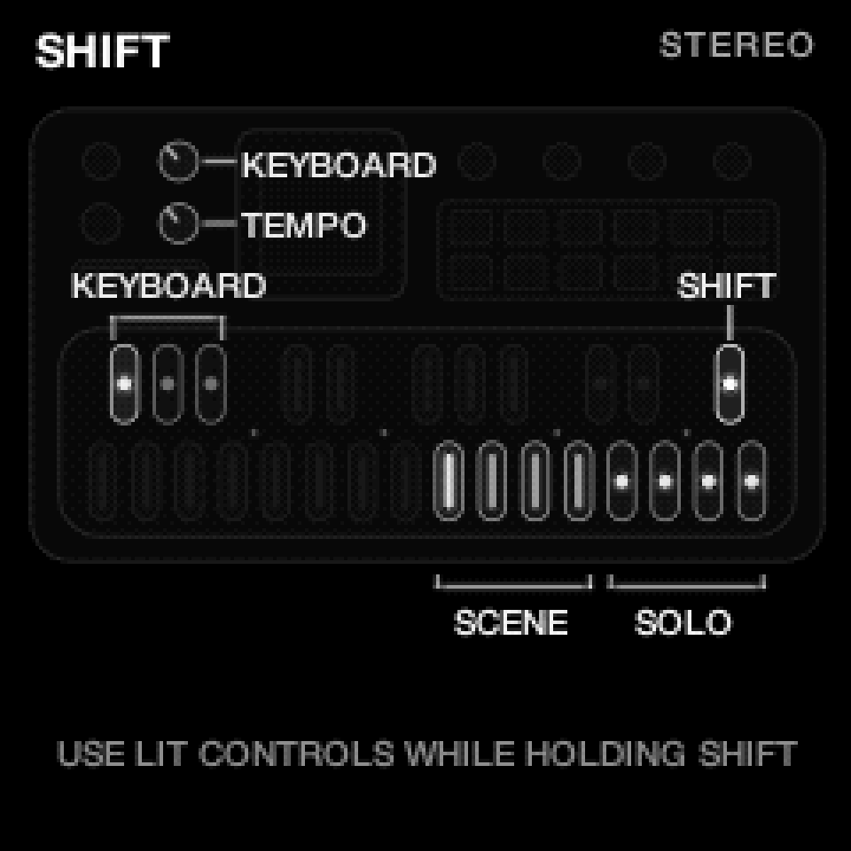
-
[OCT-] Any KnobHOLD + TURN
Engages Fine gear for sub-cent beating and precision cutoff tuning (
~63 centsper full knob revolution). -
[OCT+] Any KnobHOLD + TURN
Engages Coarse gear to sweep the full 18.6-octave range (
0.05 Hzto20 kHz) in just over one turn. -
[OCT-] [OCT+]HOLD BOTH
Snaps the active parameter page back to clean factory calibration (
55 / 82.4 / 110 / 165 Hz,50%duty,0%coupling, open filters). -
Shift (top-right key) Lower Keys 13–16HOLD + TAP
Toggles additive
Solo 1–4for Oscillators 1–4, isolating the selected voices while pulsing their LEDs. -
Shift (top-right key) [OP1] [OP2] [OP3]HOLD + TAP
Switches the 27-key surface directly to
1/3 LIVE MIXER([OP1]),2/3 CIRCUIT LAB([OP2]), or3/3 RHYTHM LAB([OP3]) without opening [SEL]. -
Shift (top-right key) Lower Keys 9–12HOLD + TAP
Recalls or glides directly to
Scene 1–4across the third 4-key group on the bottom row. -
Shift (top-right key) (SELECT)HOLD + TURN
Steps directly through keyboard modes
1/3 LIVE MIXER,2/3 CIRCUIT LAB, and3/3 RHYTHM LABfrom any screen. -
Shift (top-right key) (ALGORITHM)HOLD + TURN
Adjusts internal master
TEMPO(20–3000 BPM) from any screen without leaving your current keyboard mode.
Hardware notation used throughout this manual matches the physical M-VAVE FM-1 silkscreen and its 17 blank keys:
-
[FX] [OP1]PRINTED BUTTON / KEY Text printed on the case
-
(KNOB 1) (SELECT)PRINTED KNOB Potentiometer or encoder
- Shift (top-right key) BLANK UPPER KEY Isolated key next to [POLY]
- Lower Keys 1–16 BLANK LOWER ROW Four 4-key dot groups
-
[OCT-] (KNOB 1)MODIFIER COMBO Hold first, move second
-
CYCLE PRESSGESTURE BADGE Physical hand action
All four oscillators run continually like a hardware CMOS drone box, feeding a shared virtual power rail into per-voice MS-20 high-pass and low-pass filters. Instead of triggering standard piano notes, you sculpt beating pitches, filter self-oscillation, LFO cross-modulation, finger pressure, and scene morphing in real time.
7.1 // BUILD YOUR FIRST DRONE
-
1 / TUNE A CHORD
Tap [HOME] to view
FREQUENCYand turn (KNOB 1) through (KNOB 4) to set a low root and three close harmonies; hold [OCT-] while turning to dial in slow beating. -
2 / STARVE THE SUPPLY
Turn (ALGORITHM) to around
35%so close pitches pull warmly together, then push past50%to hear slower voices snap into hard sync. -
3 / SCULPT THE FILTERS
Tap [FX], turn (SELECT) to pick
OSC 1and roll (KNOB 3) down for deep bass, then pickOSC 2and raise (KNOB 4) past60%until the filter begins to sing. -
4 / ADD SLOW MOTION
Tap [LFO], set (KNOB 1) to
LPF, pick a smooth shape on (KNOB 2), keepRATEslow on (KNOB 3), and raiseDEPTHon (KNOB 4) so the filter breathes on its own. -
5 / LEAN INTO THE KEYS
Tap [SEL] to confirm
1/3 LIVE MIXERis active, then press Lower Keys 1–4 on the bottom left to open and close each voice's filter with finger weight. -
6 / SAVE YOUR SCENE
Tap [SAVE] to arm
SAVE SCENE, tap [OP1]–[OP4] to choose a target slot, and tap [SAVE] a second time to commit your patch to flash.
8.1 // [FX] DUAL FILTER
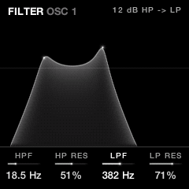
Each oscillator runs through dedicated 12 dB/oct Korg-35 high-pass and low-pass filters in series; turn (SELECT) or tap [FX] to step across OSC 1–4.
-
(KNOB 1) HPF CutoffTURN
Sweeps the resonant high-pass cutoff from
2.0 Hzto28 kHzto carve sub-bass weight or band-pass throats. -
(KNOB 2) HP ResonanceTURN
Boosts the high-pass cutoff peak for tight low-end punch above
0%and diode-clipped singing above60%. -
(KNOB 3) LPF CutoffTURN
Sweeps the low-pass cutoff from dark sub-harmonics up to open
28 kHzsquare-wave edges. -
(KNOB 4) LP ResonanceTURN
Adds warm Korg-35 feedback up to
60%and drives full self-oscillation from60%to100%.
8.2 // [LFO] DUAL MODULATORS
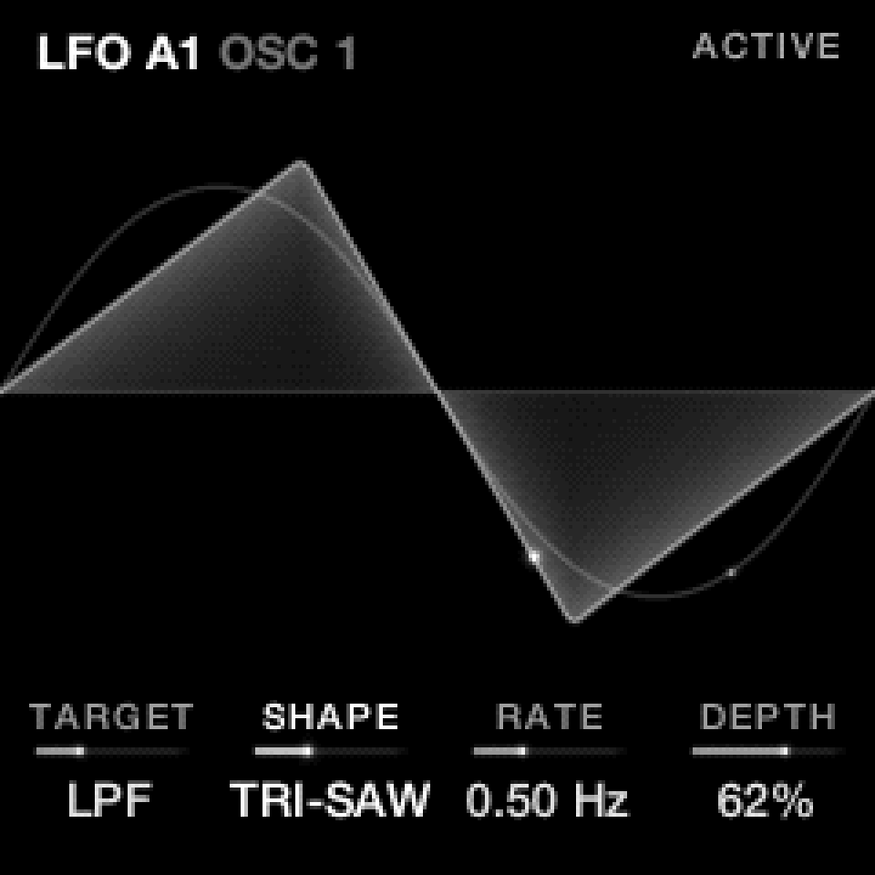
Every oscillator carries two dedicated modulators (LFO A and LFO B); turn (SELECT) or tap [LFO] to step through all 8 slots (A1/B1–A4/B4).
-
(KNOB 1) TargetTURN
Routes modulation to
FREQ,DUTY,LPF,LP RES,HPF,HP RES,LEVEL,PAN, or onLFO Bdirectly intoA RATEandA DEPTH. -
(KNOB 2) ShapeTURN
Morphs continuously across sine, triangle, sawtooth, square, and smooth analog random drift.
-
(KNOB 3) RateTURN
Spans multi-minute tidal cycles (
0.01 Hz) all the way up to audio-rate FM sidebands (2 kHz). -
(KNOB 4) DepthTURN
Scales modulation excursion around the target parameter's resting knob position.
8.3 // [HOME] & [EDIT] ALL-VOICE BARS


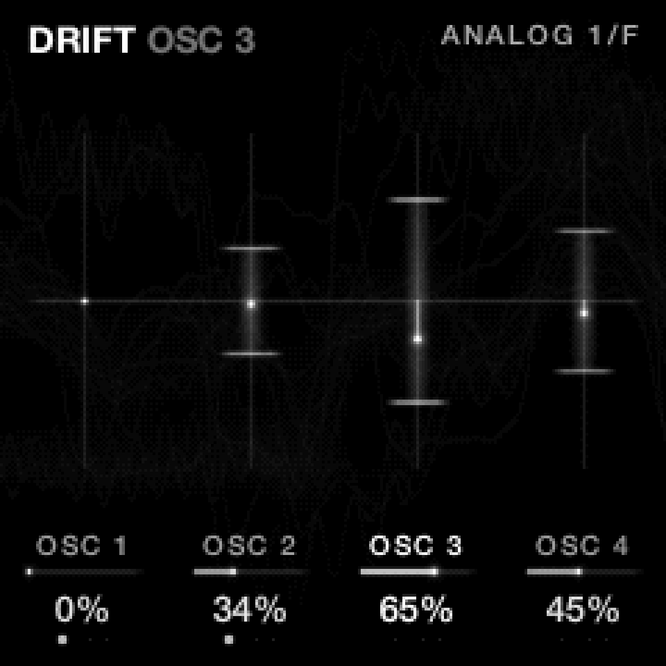
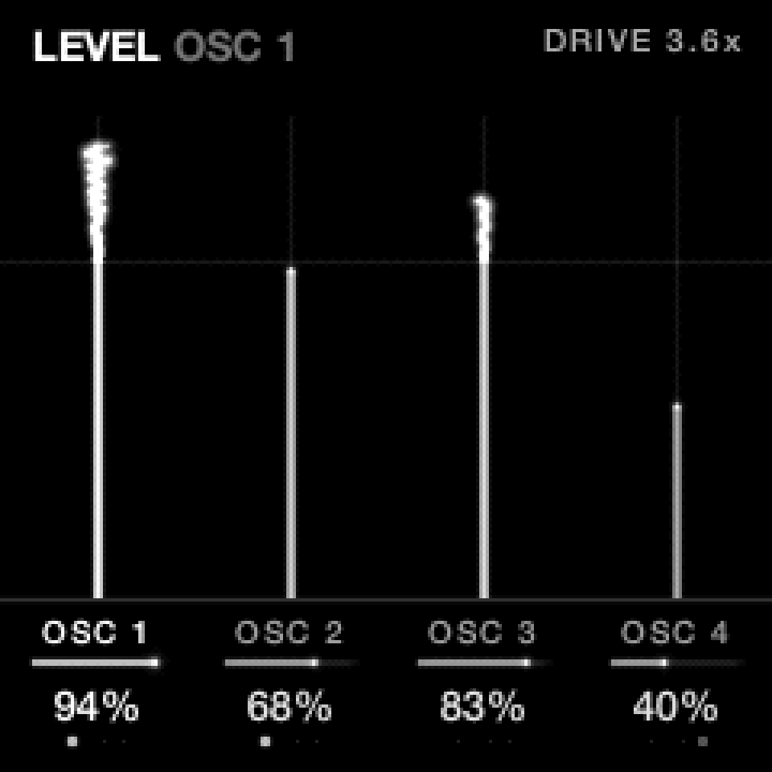
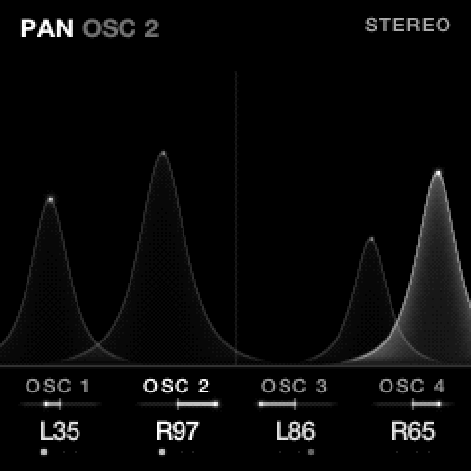
All-voice pages map (KNOB 1) through (KNOB 4) directly to Oscillators 1–4 side by side: [HOME] cycles FREQUENCY, DUTY, and DRIFT (plus the clean idle scope), while [EDIT] cycles LEVEL and PAN.
-
[HOME] Frequency · Duty · DriftCYCLE
Tunes voice pitch (
0.05 Hz–20 kHz), pinches square waves from50%to narrow5%–95%pulses, and dials in independent1/fthermal wander. -
[EDIT] Level · PanCYCLE
Balances clean post-filter volume up to
70%before driving up to4.5xpre-filter MS-20 saturation above70%, then places voices acrossL100–R100.
8.4 // (ALGORITHM) RAIL COUPLING
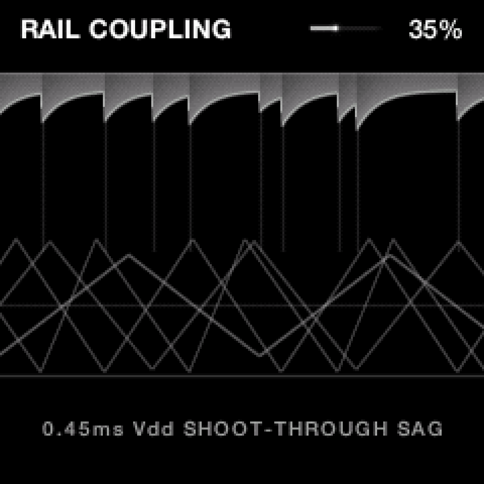
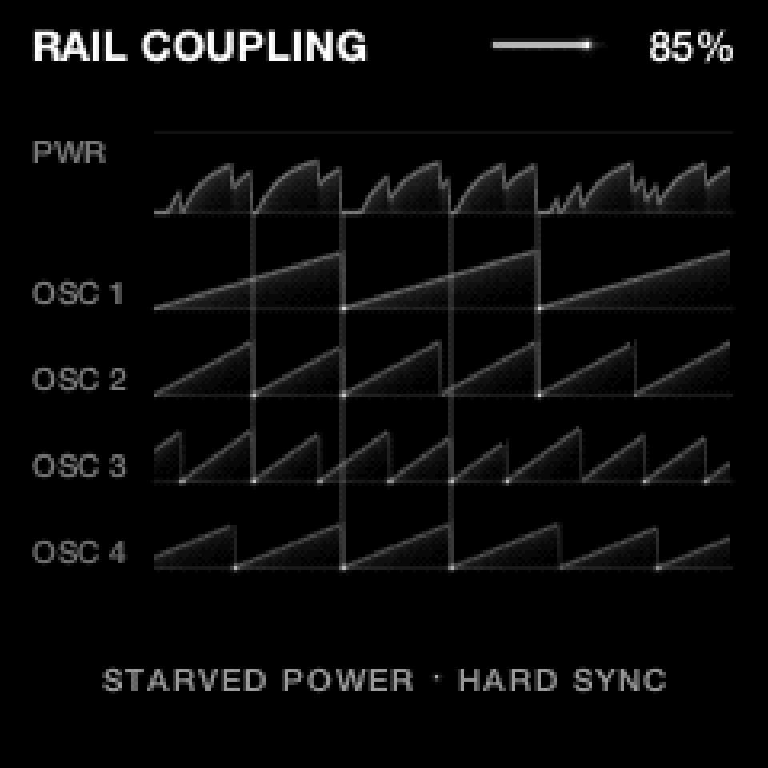
Turning (ALGORITHM) from any screen opens the five-lane RAIL COUPLING analyzer, plotting the drooping virtual supply rail (PWR) above the four oscillator capacitor ramps (OSC 1–4).
-
0%–35% / SHARED POWER & SOFT PULL
Light supply sag introduces warm sympathetic frequency pull between neighboring oscillators without breaking their independent pitch cycles.
-
36%–100% / STARVED POWER & HARD SYNC
Heavy rail droop fires vertical hard-sync discharge lines across the lower lanes, forcing slower oscillators to reset on dominant peaks.
9.1 // MODE 1/3 · LIVE MIXER

Default performance surface mapping the 20 left and center pressure keys to formant swells, sub-octave shifts, and stereo macros while keeping Latch ([MONO]) and Mute 1–4 (Lower Keys 13–16) anchored on the right.
-
Lower Keys 1–4 Filter 1–4PRESS
Opens each voice's resonant MS-20 low-pass filter and vactrol VCA with finger pressure.
-
Lower Keys 5–8 Octave 1–4PRESS
Drops Oscillators 1–4 down one full sub-octave while held.
-
Lower Keys 9–12 Duty 1–4PRESS
Pinches each oscillator's pulse width toward a thin nasal reed under finger pressure.
-
[OP1] [OP2] [OP3] Tone MacrosPRESS
Bends all voices simultaneously with
Sub-Bass([OP1]),5th Bend([OP2]), or4.5x MS-20 Drive([OP3]). -
[OP4] [OP5] Master Filter CurtainsPRESS
Sweeps a master resonant
LPF Drop([OP4]) orHPF Sweep([OP5]) across the stereo mix. -
[OP6] [PIT] [GLO] Stereo WidthPRESS
Collapses the drone to dead-center
Mono([OP6]), widens it intoHyper-Widestereo ([PIT]), or damps drift intoRatio Lock([GLO]).
9.2 // MODE 2/3 · CIRCUIT LAB
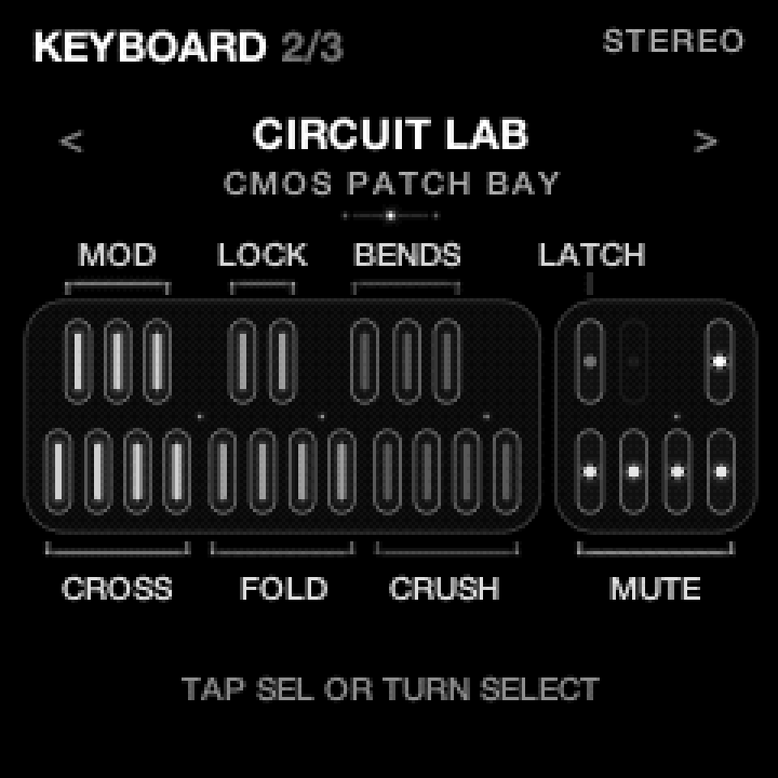
Turns the 20 pressure keys into a live circuit-bending matrix for inter-voice FM, West-Coast wavefolding, sample-rate decimation, and twin-filter scream.
-
Lower Keys 1–4 Cross 1–4PRESS
Drives each oscillator's pitch and filter cutoff straight from its neighbor oscillator at audio rate.
-
Lower Keys 5–8 Fold 1–4PRESS
Pushes Oscillators 1–4 through a triple-stage West-Coast wavefolder for dense upper harmonics.
-
Lower Keys 9–12 Crush 1–4PRESS
Decimates each oscillator's sample rate and bit depth into raw aliasing grit.
-
[OP1] [OP2] [OP3] Mod MacrosPRESS
Crossfades paired
Ring Mod([OP1]), locksOSC 2–4toOSC 1inHard Sync([OP2]), or overclocks all LFOs32xintoLFO Turbo([OP3]). -
[OP4] [OP5] Lock & ScreamPRESS
Freezes thermal drift into
Ratio Lock([OP4]) or drives twin Korg-35 filters into self-oscillatingFilter Scream([OP5]). -
[OP6] [PIT] [GLO] Master BendsPRESS
Slams the full mix into
4.5x Drive([OP6]), masterFold All([PIT]), or masterCrush All([GLO]).
9.3 // MODE 3/3 · RHYTHM LAB
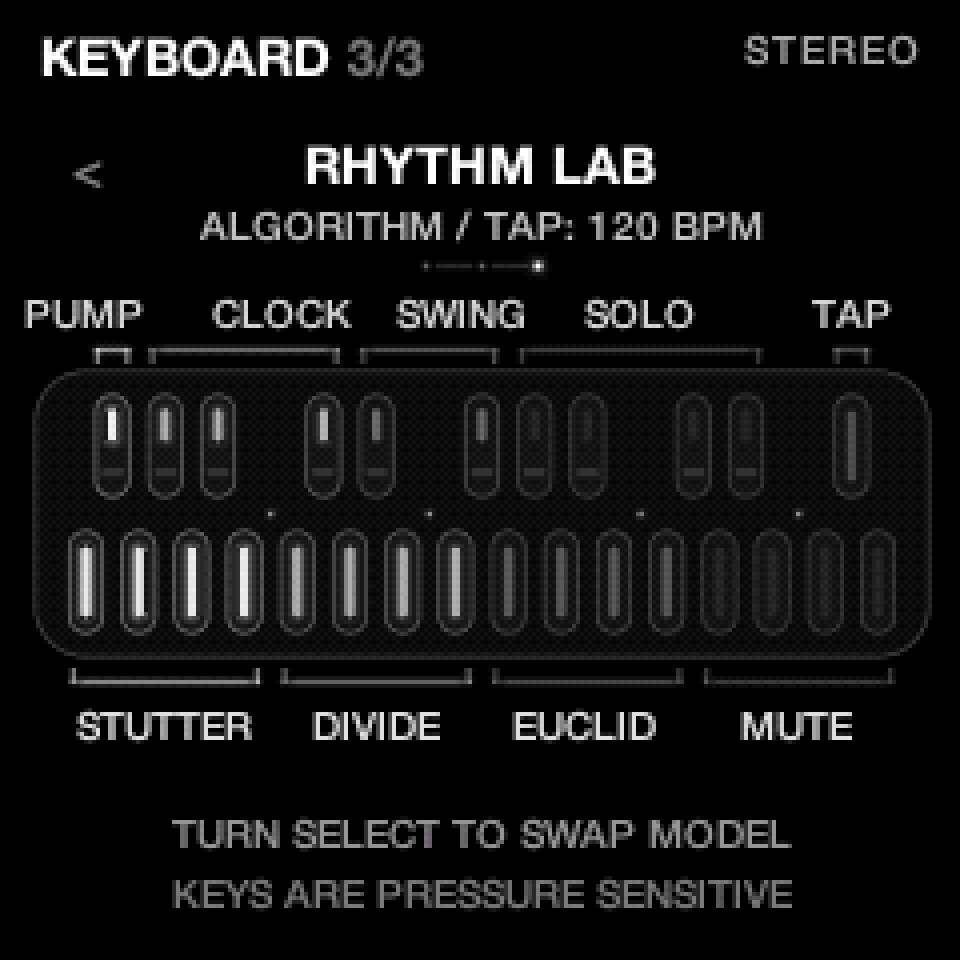
Transforms sustained drones into phase-locked rhythmic patterns; turn (ALGORITHM) to sweep master TEMPO (20–3000 BPM) or tap [POLY] for live tap tempo.
-
Lower Keys 1–4 Stutter 1–4PRESS
Chops Oscillators 1–4 with pressure-sensitive tremolo gates.
-
Lower Keys 5–8 Divide 1–4PRESS
Locks Oscillators 1–4 to master-clocked
/1,/2,/3, and/4rhythmic subdivisions. -
Lower Keys 9–12 Euclid 1–4PRESS
Drives Oscillators 1–4 with interlocking
E(3,8),E(5,8),E(5,16), andE(7,16)Euclidean polyrhythms. -
[OP1] [OP2] [OP3] Pulse MacrosPRESS
Applies 4-voice
Sidechain Pump([OP1]), steps a1-2-3-4 Chasesequence ([OP2]), or multiplies master clock speed up to4x([OP3]). -
[OP4] [OP5] Gate EnvelopePRESS
Shapes every active rhythmic gate into a resonant MS-20
Filter Pluck([OP4]) or pinpoint6% Short Gate([OP5]). -
[OP6] [PIT] [GLO] Rhythm FXPRESS
Adds 16th-note
Swing([OP6]), alternating stereoPing-Pongbounce ([PIT]), or fastRatchet Rollfills ([GLO]).
1/3 LIVE MIXER with Scene 2, 2/3 CIRCUIT LAB with Scene 3, and 3/3 RHYTHM LAB with Scene 4.
-
10.1 / 4-SCENE MORPH LOOP & RECALL
Turn (PRESETS) to morph continuously across occupied Scenes 1–4, tap [OP1]–[OP4] while [SAVE] is armed, or hold Shift (top-right key) and tap Lower Keys 9–12 to recall Scenes 1–4 directly from the keyboard.
-
10.2 / TWO-STEP [SAVE] & WEAR-LEVELED FLASH
Tap [SAVE] once to arm
SAVE SCENE, tap [OP1]–[OP4] to select a slot (OVERWRITE?orWRITE NEW?), and tap [SAVE] a second time to commit to non-volatile flash (or hold [SAVE] for 2 seconds to clear the slot).
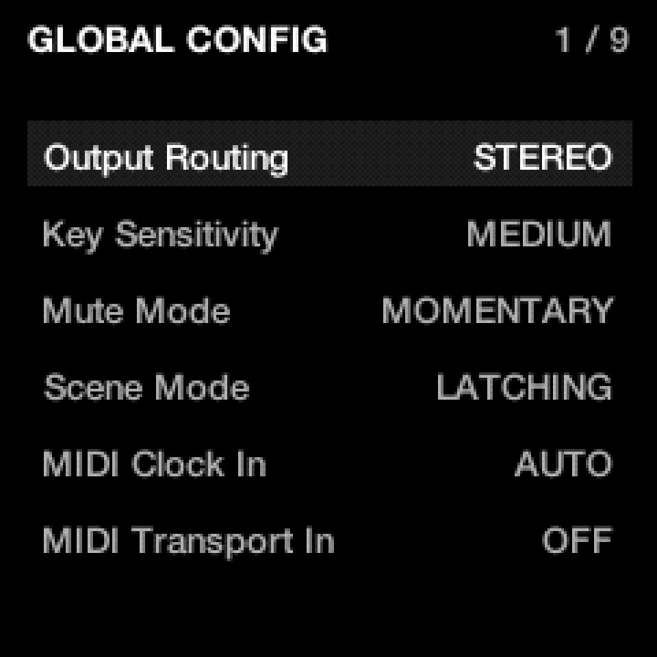
Tap [GLO] to open the 9-row GLOBAL CONFIG menu; turn (SELECT) to highlight a row and turn (KNOB 1)–(KNOB 4) or (ALGORITHM) to adjust it.
| Menu Row | Options | Function |
|---|---|---|
| 1. Output Routing | STEREO / MONO |
Selects wide stereo panorama or phase-coherent summed mono output for mono pedalboards. |
| 2. Key Sensitivity | VERY HIGH – VERY LOW |
Calibrates finger force response across the 20 analog pressure keys (MEDIUM default) with a live on-row meter. |
| 3. Mute Mode | MOMENTARY / LATCHING |
Sets whether Lower Keys 13–16 (Mute and Solo) engage only while held or toggle on tap. |
| 4. Scene Mode | LATCHING / MOMENTARY |
Sets whether Shift (top-right key) + Lower Keys 9–12 stays on the recalled scene or morphs back on release. |
| 5. MIDI Clock In | AUTO / OFF |
Locks automatically to incoming 24 PPQN MIDI clock over 3.5 mm TRS, USB-C, or Bluetooth MIDI. |
| 6. MIDI Transport In | OFF / PHASE / RUN/STOP |
Ignores MIDI Start/Stop, resets Beat-1 bar phase on Start, or starts and mutes master audio. |
| 7. MIDI Channel In | OMNI / CH 1–16 |
Receives MIDI messages on all channels (OMNI default) or filters to a single channel. |
| 8. Factory Reset / About | PRESETS / CLEAN INIT |
Restores factory presets and scenes, initializes an unmodulated patch, or displays firmware version info. |
| 9. Algorithm Knob | COUPLING / TEMPO |
Assigns unshifted (ALGORITHM) turns globally to RAIL COUPLING or master TEMPO. |
When patching into mono guitar pedals, use a 3.5 mm TRS stereo-to-dual-1/4" TS breakout cable and set Output Routing to MONO; avoid plugging a mono 3.5 mm TS cable directly into the stereo output jack.
Is flashing Ruido safe, and can I revert back to the factory M-VAVE firmware?
Yes. Ruido writes exclusively to the application partition and preserves the hardware bootloader. Holding [OCT-] while switching power on forces USB recovery mode at any time, allowing clean recovery or instant reversion to stock M-VAVE firmware.
Does Ruido output digital audio over USB-C as well as the 3.5 mm analog jack?
Yes. Alongside the analog line jack, Ruido streams 44.1 / 48 kHz class-compliant UAC1 digital stereo audio with 1-LSB TPDF dithering and clock-drift interpolation directly to macOS, iOS, Windows, Linux, or standalone USB host hardware.
Why doesn't Ruido include built-in digital reverb or delay?
Ruido dedicates all DSP headroom to 4× oversampling, shared power-rail modeling, and per-voice Korg-35 high-pass and low-pass Sallen-Key filters so external guitar pedals and Eurorack modules receive a dense, alias-free dry signal.
Can I plug Ruido straight into a mono guitar pedalboard?
Yes. Use a standard 3.5 mm TRS stereo-to-dual-1/4" TS breakout cable (never plug a mono 3.5 mm TS cable directly into the stereo headphone jack, as that shorts the right channel to ground), and set Output Routing to MONO in [GLO] to sum all four voices cleanly.
Why square and pulse waves instead of wavetables or multiple shapes?
Real CD40106 CMOS oscillators couple and hard-sync across a shared power rail because of their sharp switching edges. Acoustically, variable-duty pulse waves carve rich hollow-to-nasal timbres and leave open harmonic space for fuzz, overdrive, and resonant filters without mud.
READY TO PLAY RUIDO?
Install Ruido directly onto your M-VAVE FM-1 from your browser over USB-C via The Firmware Hub. No command-line tools required.